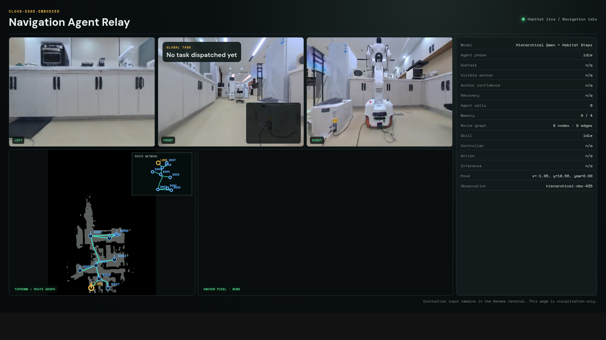
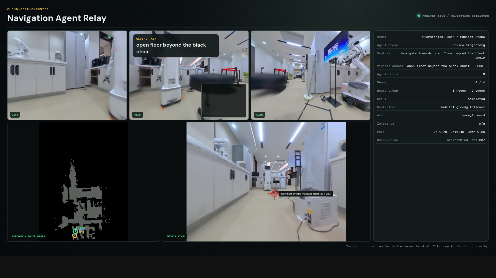

Build
Extract a sparse skeleton from free space and retain safe geodesic connectivity.
Semantic topology · skill orchestration · hierarchical verification
Topo-Harness-VLN turns dense traversability into a sparse semantic graph, ranks places jointly with target evidence, and coordinates PointGoal, ObjectGoal, grounding, and optional instruction-following backends.

System idea
Extract a sparse skeleton from free space and retain safe geodesic connectivity.
Visit backbone nodes and collect panoramic, source-grounded semantic evidence.
Jointly score place, object, function, memory, distance, and search history.
Check runtime, skill progress, and global completion before moving on.
Semantic backbone
Nodes come from traversability rather than arbitrary Euclidean proximity. Each node stores place, function, objects, landmarks, affordances, confidence, and provenance.
Joint ranking
The system balances semantic relevance against graph cost and previously exhausted regions, producing an ordered exploration sequence.
Harness
Typed skill contracts and hierarchical verifiers connect visual reasoning to recoverable, geometrically feasible motion.

Evolving evidence
The geometric backbone and initial node semantics remain stable while high-confidence object–place observations accumulate over time. This lets later tasks reuse evidence without rebuilding the navigation graph.
The stable prototype currently uses confidence-gated persistence for some facts. Complete verifier-gated promotion remains an evaluation target.
Experiment dashboard
| Variant | Success ↑ | Path efficiency ↑ | Time to target ↓ | Nodes visited ↓ | False finish ↓ |
|---|
Values remain pending until the corresponding evaluation has completed.
Episode gallery
Traceability
The gallery links summary metrics, topology snapshots, trajectories, verifier events, and videos without hiding failure cases.
